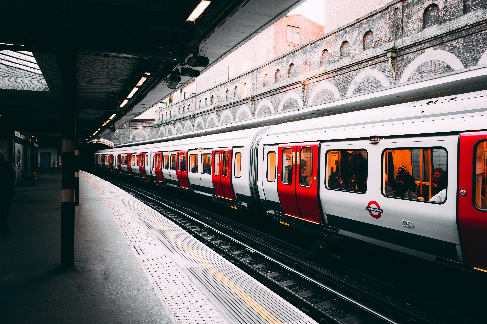

Accessibilities
Untuk menuju ke Bangsring, ada beberapa opsi transportasi yang bisa digunakan mulai dari akses
udara, laut, dan darat. Berikut detil dari cara akses menuju Bangsring Underwater.
Rumah Apung Banyuwangi ini terletak hanya sekitar 20 meter dari bibir pantai. Untuk mencapai
Rumah Apung ini Anda bisa menyewa perahu.

Attractions
Pesona Keindahan Bangsring Under Water Rumah Apung Banyuwangi Informasi umum Rumah Apung
Banyuwangi atau sering disebut Basring Under Water adalah salah satu tempat wisata air laut yang
berada di Banyuwangi. Kota Banyuwangi merupakan salah satu kota yang terletak di Wilayah Jawa
Timur. Rumah apung Bangsring tersebut memiliki ukuran 27 x 7 meter dengan bentuk bangunan
semacam gubuk atau tempat singgah. Disanalah pesona keindahan bawah lautnya pantas menjadi salah
satu agenda berwisata di Banyuwangi, 29 Daftar Tempat Wisata di Banyuwangi Jawa Timur.
Activities
Bangsring Underwater menyediakan sejumlah fasilitas wisata berbasis edukasi
dan konservasi untuk pengunjung.

Comnunity involvement
Bangsring underwater dikelola oleh kelompok masyarakat sekitar yaitu kelompok
nelayan lokal. Semua anggota tim yang terlibat adalah kelompok nelayan. Jadi, wisata ini
merupakan hasil produk dari upaya konservasi yang dilakukan oleh kelompok nelayan. kelompok
nelayan tersebut telah dibentuk sejak 2008 lalu. Namun, Bangsring Underwater secara resmi
didirikan pada 2014. Selain untuk meningkatkan perekonomian warga sekitar yang mayoritas
menggantungkan hidup dari laut, Bangsring Underwater juga bertujuan untuk menciptakan tempat
wisata berbasis konservasi.

Amenities
Beberapa Fasilitas yang terbaik untuk menyokong pelayanan dan kebutuhan para
pengunjung.